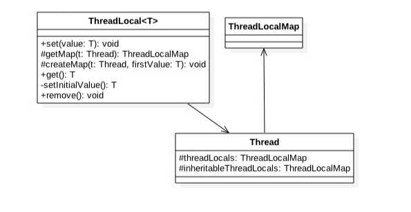

ThreadLocal原理探究
1.ThreadLocal
ThreadLocal是在JDK包里面提供的，它提供了线程本地变量，也就是如果你创建了一个ThreadLocal变量，那么访问这个变量的每个线程都会有这个变量的一个本地拷贝，多个线程操作这个变量的时候，实际是操作的自己本地内存里面的变量，从而避免了线程安全问题，创建一个ThreadLocal变量后每个线程会拷贝一个变量到自己本地内存。
2.ThreadLocal使用实例
本节来看下ThreadLocal如何使用，从而加深理解，本例子开启了两个线程，每个线程内部设置了本地变量的值，然后调用print函数打印当前本地变量的值，如果打印后调用了本地变量额remove方法则会删除本地内存中的该变量，代码如下：
public class ThreadLocalTest {
//(1)打印函数
static void print(String str){
//1.1 打印当前线程本地内存中localVariable变量的值
System.out.println(str + ":" +localVariable.get());
//1.2 清除当前线程本地内存中localVariable变量
//localVariable.remove();
}
//(2) 创建ThreadLocal变量
static ThreadLocal<String> localVariable = new ThreadLocal<>();
public static void main(String[] args) {
//(3) 创建线程one
Thread threadOne = new Thread(new Runnable() {
public void run() {
//3.1 设置线程one中本地变量localVariable的值
localVariable.set("threadOne local variable");
//3.2 调用打印函数
print("threadOne");
//3.3打印本地变量值
System.out.println("threadOne remove after" + ":" +localVariable.get());
}
});
//(4) 创建线程two
Thread threadTwo = new Thread(new Runnable() {
public void run() {
//4.1 设置线程one中本地变量localVariable的值
localVariable.set("threadTwo local variable");
//4.2 调用打印函数
print("threadTwo");
//4.3打印本地变量值
System.out.println("threadTwo remove after" + ":" +localVariable.get());
}
});
//(5)启动线程
threadOne.start();
threadTwo.start();
}
运行结果：
threadOne:threadOne local variable
threadTwo:threadTwo local variable
threadOne remove after:threadOne local variable
threadTwo remove after:threadTwo local variable
- 代码（2）创建了一个ThreadLocal变量
- 代码（3）（4）分别创建了线程one和two
- 代码（5）启动了两个线程。
- 线程one中代码3.1通过set方法设置了localVariable的值，这个设置的其实是线程one本地内存中的一个拷贝，这个拷贝线程two是访问不了的。然后代码3.2调用了print函数，代码1.1通过get函数获取了当前线程（线程one）本地内存中localVariable的值。
- 线程two执行类似线程one
解开代码1.2的注释后，再次运行，运行结果为：
threadOne:threadOne local variable
threadOne remove after:null
threadTwo:threadTwo local variable
threadTwo remove after:null
3.ThreadLocal实现原理
首先看下ThreadLocal相关的类的类图结构

如上类图可知Thread类中有一个threadLocals和inheritableThreadLocals都是ThreadLocalMap类型的变量，而ThreadLocalMap是一个定制化的Hashmap，默认每个线程中这个两个变量都为null，只有当前线程第一次调用了ThreadLocal的set或者get方法时候才会进行创建。其实每个线程的本地变量不是存放到ThreadLocal实例里面的，而是存放到调用线程的threadLocals变量里面。也就是说ThreadLocal类型的本地变量是存放到具体的线程内存空间的。ThreadLocal就是一个工具壳，它通过set方法把value值放入调用线程的threadLocals里面存放起来，当调用线程调用它的get方法时候再从当前线程的threadLocals变量里面拿出来使用。如果调用线程一直不终止那么这个本地变量会一直存放到调用线程的threadLocals变量里面，所以当不需要使用本地变量时候可以通过调用ThreadLocal变量的remove方法，从当前线程的threadLocals里面删除该本地变量。另外Thread里面的threadLocals为何设计为map结构那？很明显是因为每个线程里面可以关联多个ThreadLocal变量。
下面简单分析下ThreadLocal的set，get，remove方法的实现逻辑：
void set(T value)
public void set(T value) {
//(1)获取当前线程 Thread t = Thread.currentThread(); //(2)当前线程作为key，去查找对应的线程变量，找到则设置 ThreadLocalMap map = getMap(t); if (map != null) map.set(this, value); else //(3)第一次调用则创建当前线程对应的HashMap createMap(t, value);}
如上代码（1）首先获取调用线程，然后使用当前线程作为参数调用了getMap(t)方法，getMap(Thread t)代码如下：ThreadLocalMap getMap(Thread t) {
return t.threadLocals;}
可知getMap(t)所做的就是获取线程自己的变量threadLocals，可知threadlocal变量是绑定到了线程的成员变量里面。
如果getMap(t)返回不为空，则把value值设置进入到threadLocals，也就是把当前变量值放入了当前线程的内存变量threadLocals，threadLocals是个HashMap结构，其中key就是当前ThreadLocal的实例对象引用，value是通过set方法传递的值。
如果getMap(t)返回空那说明是第一次调用set方法，则创建当前线程的threadLocals变量，下面看createMap(t, value)里面做了什么呢？
oid createMap(Thread t, T firstValue) {
t.threadLocals = new ThreadLocalMap(this, firstValue);
}
可知就是创建当前线程的threadLocals变量。
T get()
public T get() {
//(4) 获取当前线程 Thread t = Thread.currentThread(); //(5)获取当前线程的threadLocals变量 ThreadLocalMap map = getMap(t); //(6)如果threadLocals不为null，则返回对应本地变量值 if (map != null) { ThreadLocalMap.Entry e = map.getEntry(this); if (e != null) { @SuppressWarnings("unchecked") T result = (T)e.value; return result; } } //(7)threadLocals为空则初始化当前线程的threadLocals成员变量 return setInitialValue();}
如上代码（4）首先获取当前线程实例，如果当前线程的threadLocals变量不为null则直接返回当前线程绑定的本地变量。否者执行代码（7）进行初始化，setInitialValue()的代码如下：
1 | private T setInitialValue() { |
如上代码如果当前线程的的threadLocals变量不为空则设置当前线程的本地变量值为null，否者调用createMap创建当前线程的createMap变量。
void remove()
public void remove() {
ThreadLocalMap m = getMap(Thread.currentThread()); if (m != null) m.remove(this);}
如上代码，如果当前线程的 threadLocals变量不为空，则删除当前线程中指定ThreadLocal实例的本地变量。
总结：
每个线程内部都有一个名字为threadLocals的成员变量，该变量类型为HashMap，其中key为我们定义的ThreadLocal变量的this引用，value则为我们set时候的值，每个线程的本地变量是存到到线程自己的内存变量threadLocals里面的，如果当前线程一直不消失那么这些本地变量会一直存到，所以可能会造成内存溢出，所以使用完毕后要记得调用ThreadLocal的remove方法删除对应线程的threadLocals中的本地变量。